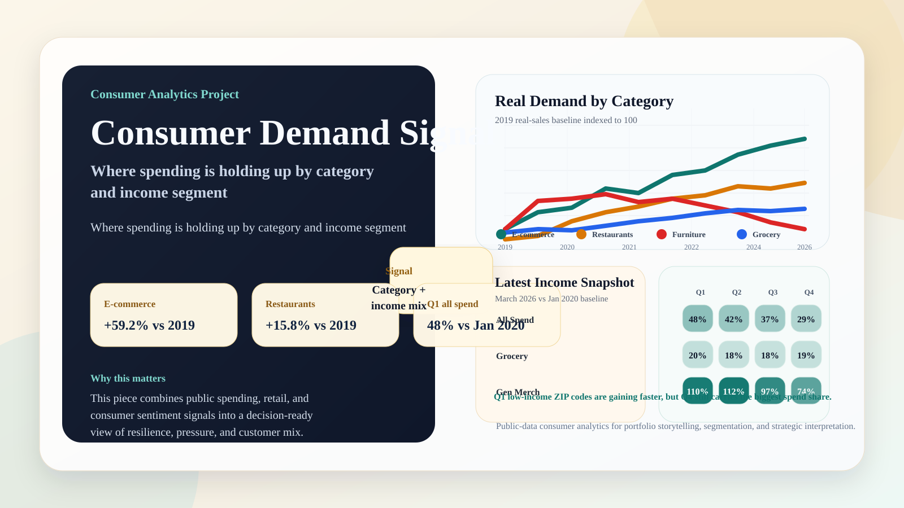
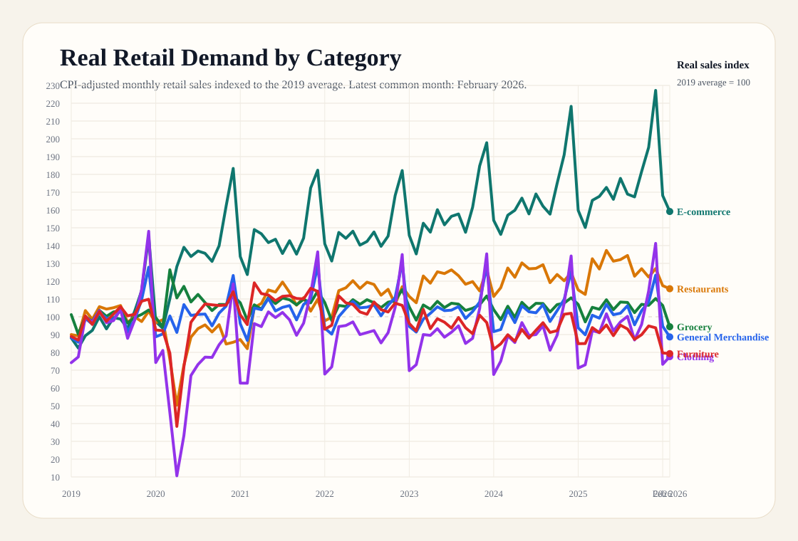
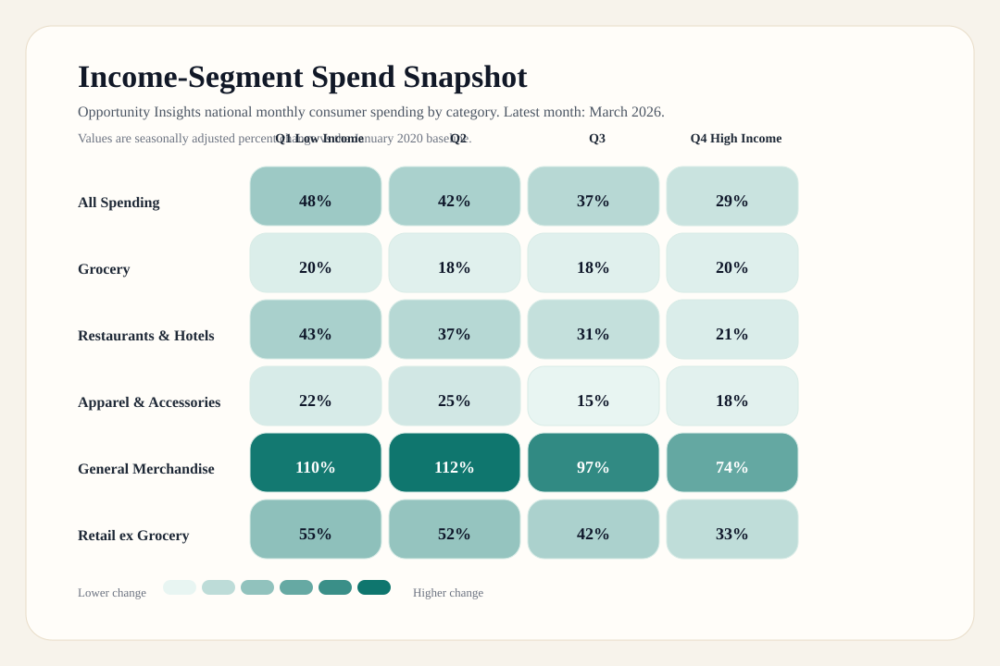
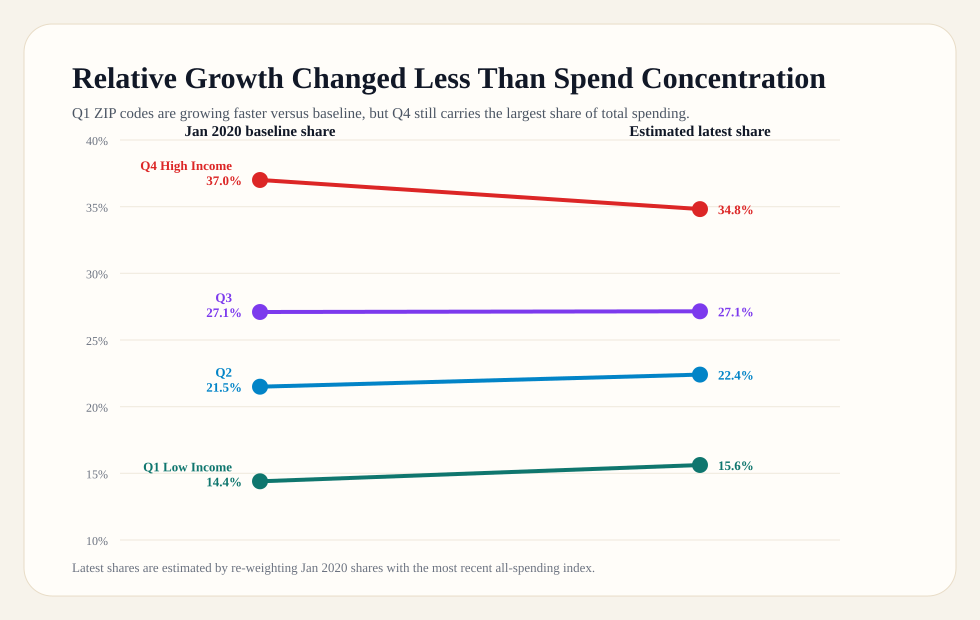

Draft Portfolio Project
Consumer Demand Signal: Where Spending Is Holding Up in 2026
A consumer analytics case study that combines retail sales, consumer sentiment, and income-segment card-spend data to show where demand is resilient and where discretionary pressure is still visible.
Latest retail monthFebruary 2026
Latest sentiment reading53.3 in March 2026
Latest OI monthMarch 2026
Visual Assets




What The Story Says
- E-commerce was +59.2% above its 2019 real-sales baseline in February 2026, the strongest structural gain in the retail basket.
- Restaurants were still +15.8% above 2019 in real terms even though Michigan sentiment was only 53.3 in March 2026.
- Furniture remained -20.7% below its 2019 real-sales baseline, signaling the weakest demand among the tracked discretionary categories.
- In Opportunity Insights' March 2026 cut, all-spending growth was 48.3% for Q1 low-income ZIP codes versus 28.6% for Q4 high-income ZIP codes.
- High-income ZIP codes still anchored the largest share of baseline card spend at 37.0%, and an estimated 34.8% in the latest month.